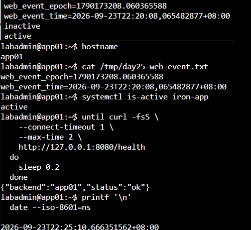
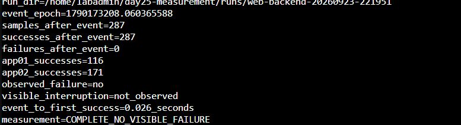
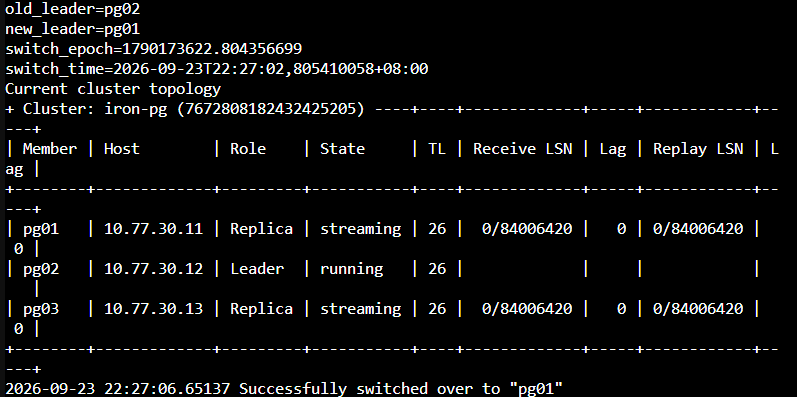
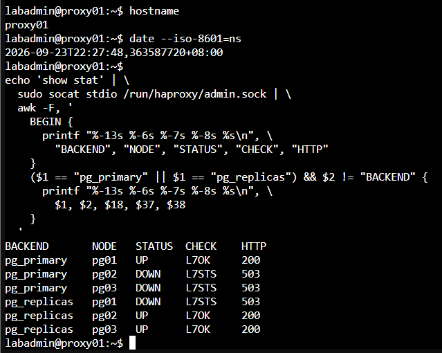
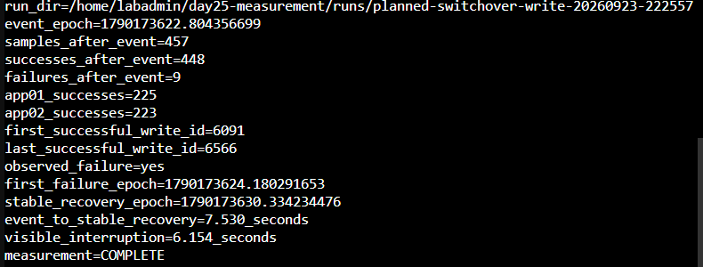
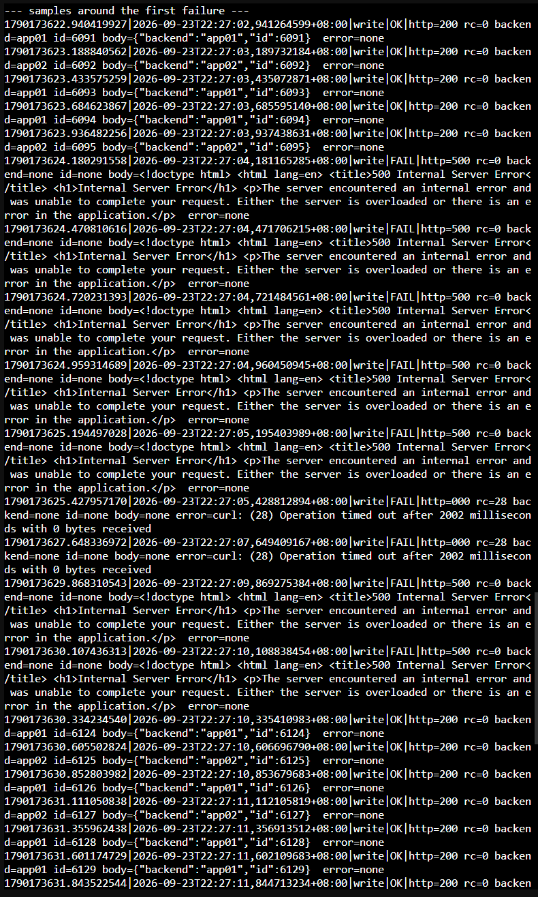
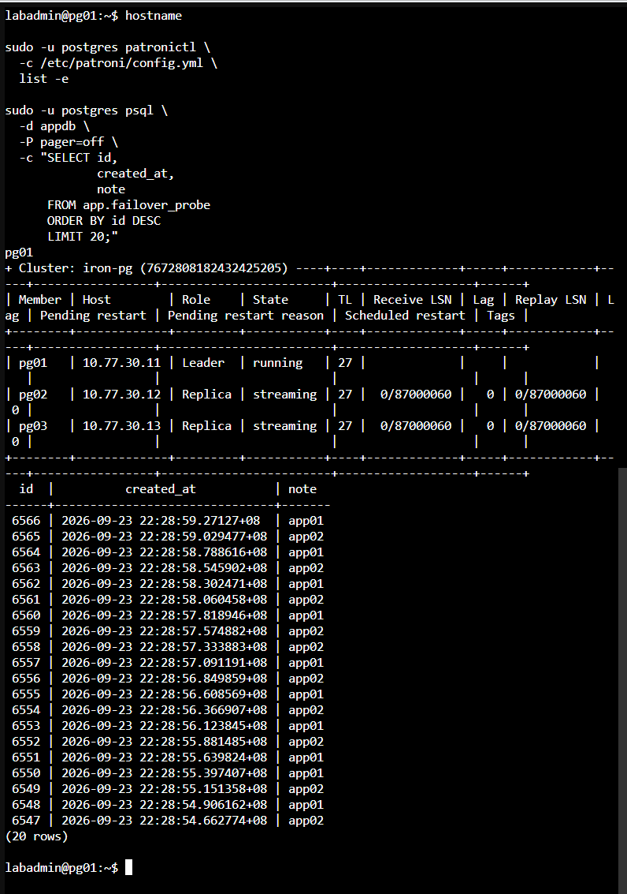

Day 25 額外實作｜量測代理與應用程式中斷時間
本文件接續 Day 25 主實作，量測兩個使用者實際會遇到的結果：
app01停止服務時，經 Nginx 存取 Web 服務是否出現可見中斷。- PostgreSQL 計畫性切換時，經 Nginx、應用程式與 HAProxy 寫入資料庫的服務恢復時間。
本次尚未建立 Keepalived 與 VIP，因此兩項測試都固定使用 proxy01 的節點 IP 10.77.20.21。這可以排除 VIP 漂移時間，只觀察代理與應用程式路徑。
探測間隔為 0.2 秒。發生失敗後，以連續三次成功中的第一筆作為穩定恢復點。若整段樣本沒有捕捉到失敗，結果會顯示 observed_failure=no 與 visible_interruption=not_observed，代表本次未觀察到可見中斷。
一、量測邊界與時間點
| 量測 | 起點 | 終點 | 結果用途 |
|---|---|---|---|
| Web 可見中斷 | client01 第一個 /health 失敗 |
後續連續三次 /health 成功中的第一筆 |
判斷移除一台 Web Backend 對使用者的影響 |
| 應用程式可寫中斷 | client01 第一個 /write 失敗 |
新 Primary 可用後，連續三次 /write 成功中的第一筆 |
量化完整應用程式寫入路徑的恢復時間 |
| 切換到穩定可寫 | 送出 Planned Switchover 前記錄的時間 | 連續三次 /write 成功中的第一筆 |
觀察 Patroni、HAProxy 與應用程式共同完成切換的時間 |
第一個失敗到穩定恢復 全部由 client01 記錄，可直接代表該觀察點看到的服務中斷。切換指令到穩定恢復 的起點與終點來自不同主機，只有時間同步正常時才採用。
二、確認健康基準與時間同步
2.1 在 client01、app01、app02 與任一 PostgreSQL 節點確認時間同步
四台主機分別執行：
hostname
date --iso-8601=ns
timedatectl show -p NTPSynchronized --value
NTPSynchronized 應全部為 yes。任一主機尚未同步時，先修正時間來源再開始量測。client01 單機記錄的可見中斷是主要結果；跨主機的切換指令到恢復時間只作參考。
2.2 在 proxy01 確認入口與服務
hostname
systemctl is-active nginx haproxy
sudo ss -lntp | \
awk '$4 ~ /:80$/ || $4 ~ /^10\.77\.20\.21:(5432|5433)$/'
echo 'show stat' | \
sudo socat stdio /run/haproxy/admin.sock | \
awk -F, '
BEGIN {
printf "%-13s %-6s %-7s %-8s %s\n", \
"BACKEND", "NODE", "STATUS", "CHECK", "HTTP"
}
($1 == "pg_primary" || $1 == "pg_replicas") && $2 != "BACKEND" {
printf "%-13s %-6s %-7s %-8s %s\n", \
$1, $2, $18, $37, $38
}
'
應看到 Nginx 與 HAProxy 為 active，proxy01 節點 IP 正在監聽 HTTP 80、DB-RW 5432 與 DB-RO 5433。pg_primary 應只有一台 PostgreSQL 節點符合 HTTP 200。
2.3 在任一 PostgreSQL 節點確認叢集
hostname
sudo -u postgres patronictl \
-c /etc/patroni/config.yml \
list -e
開始前應只有一台 Leader，兩台 Replica 均為 streaming，Lag 為 0。
2.4 確認 app01、app02 使用 proxy01 節點 IP
若接續主實作執行，/etc/iron-app.env 已使用 DB_HOST=10.77.20.21 與 DB_SSLMODE=require，確認後可直接進入 2.5。若目前環境已改用固定 DB-RW 網域與 verify-full，再依本節建立暫時的 systemd Runtime Override。這項設定只寫入 /run，重新開機便會消失，持久設定維持原樣。
先在 app01、app02 分別確認目前設定：
sudo sed -n -E \
'/^DB_(HOST|SSLMODE|SSLROOTCERT)=/p' \
/etc/iron-app.env
只有目前設定已改用固定 DB-RW 網域時，才在 app01 與 app02 分別執行以下步驟：
hostname
sudo install -d -m 0755 \
/run/systemd/system/iron-app.service.d
sudo nano \
/run/systemd/system/iron-app.service.d/day25-measurement.conf
完整貼入：
[Service]
Environment=DB_HOST=10.77.20.21
Environment=DB_SSLMODE=require
Environment=DB_SSLROOTCERT=
按 Ctrl+O、Enter、Ctrl+X 儲存，再執行：
sudo systemctl daemon-reload
sudo systemctl restart iron-app
systemctl is-active iron-app
IRON_APP_PID="$(
systemctl show \
-p MainPID \
--value \
iron-app
)"
sudo sh -c \
"tr '\\0' '\\n' < /proc/${IRON_APP_PID}/environ" | \
grep -E '^DB_(HOST|SSLMODE|SSLROOTCERT)='
curl -fsS \
http://127.0.0.1:8080/health
畫面應顯示 DB_HOST=10.77.20.21、DB_SSLMODE=require，並成功取得本機 /health 回應。命令刻意不輸出 DB_PASSWORD。
2.5 從 client01 確認完整路徑
hostname
for request in 1 2 3 4 5 6
do
curl -fsS \
--connect-timeout 1 \
--max-time 2 \
http://10.77.20.21/health
printf '\n'
done
curl -fsS \
--connect-timeout 1 \
--max-time 3 \
-X POST \
http://10.77.20.21/write
printf '\n'
應看到 app01、app02 的健康回應，以及一筆含有 id 與 backend 的寫入結果。
三、在 client01 建立共用探測腳本
以下步驟全部在 client01 執行。長腳本使用 nano，避免終端機貼上 tee 或 Here Document 時被截斷。
3.1 建立目錄
hostname
DAY25_BASE='/home/labadmin/day25-measurement'
mkdir -p \
"$DAY25_BASE/runs"
command -v bash
command -v curl
command -v awk
3.2 建立 probe.sh
nano \
/home/labadmin/day25-measurement/probe.sh
完整貼入：
#!/bin/bash
set -u
probe_type="${1:?usage: probe.sh web|write RUN_DIR}"
run_dir="${2:?usage: probe.sh web|write RUN_DIR}"
log_file="$run_dir/probe.log"
body_file="$run_dir/body.$$"
case "$probe_type" in
web)
request_url='http://10.77.20.21/health'
;;
write)
request_url='http://10.77.20.21/write'
;;
*)
echo 'usage: probe.sh web|write RUN_DIR' >&2
exit 2
;;
esac
cleanup() {
rm -f "$body_file"
}
trap cleanup EXIT
trap 'exit 0' INT TERM
while true; do
request_epoch="$(date +%s.%N)"
request_time="$(date --iso-8601=ns)"
: > "$body_file"
curl_args=(
-sS
--connect-timeout 1
--max-time 2
-o "$body_file"
-w '%{http_code}'
)
if [ "$probe_type" = 'write' ]; then
curl_args+=(
-X POST
)
fi
http_code="$(
curl "${curl_args[@]}" \
"$request_url" \
2>"$run_dir/curl-error.$$"
)"
curl_rc=$?
body="$(
tr '\n|' ' ' < "$body_file" \
2>/dev/null || true
)"
curl_error="$(
tr '\n|' ' ' < "$run_dir/curl-error.$$" \
2>/dev/null || true
)"
rm -f "$run_dir/curl-error.$$"
backend="$(
printf '%s\n' "$body" | \
sed -n 's/.*"backend":"\([^"]*\)".*/\1/p'
)"
row_id="$(
printf '%s\n' "$body" | \
sed -n 's/.*"id":\([0-9][0-9]*\).*/\1/p'
)"
status='FAIL'
if [ "$curl_rc" -eq 0 ] && \
[ "$http_code" = '200' ]; then
case "$probe_type" in
web)
if printf '%s\n' "$body" | \
grep -Fq '"status":"ok"'; then
status='OK'
fi
;;
write)
if [ -n "$row_id" ]; then
status='OK'
fi
;;
esac
fi
printf '%s|%s|%s|%s|http=%s rc=%s backend=%s id=%s body=%s error=%s\n' \
"$request_epoch" \
"$request_time" \
"$probe_type" \
"$status" \
"${http_code:-000}" \
"$curl_rc" \
"${backend:-none}" \
"${row_id:-none}" \
"${body:-none}" \
"${curl_error:-none}" | \
tee -a "$log_file"
sleep 0.2
done
3.3 建立 start-run.sh
nano \
/home/labadmin/day25-measurement/start-run.sh
完整貼入：
#!/bin/bash
set -eu
run_name="${1:?usage: start-run.sh RUN_NAME web|write}"
probe_type="${2:?usage: start-run.sh RUN_NAME web|write}"
base_dir='/home/labadmin/day25-measurement'
case "$probe_type" in
web|write) ;;
*)
echo 'probe type must be web or write' >&2
exit 2
;;
esac
run_dir="$base_dir/runs/${run_name}-$(date +%Y%m%d-%H%M%S)"
mkdir -p "$run_dir"
printf '%s\n' "$probe_type" > "$run_dir/probe.type"
date +%s.%N > "$run_dir/probe-start.epoch"
date --iso-8601=ns > "$run_dir/probe-start.iso"
nohup \
"$base_dir/probe.sh" \
"$probe_type" \
"$run_dir" \
> "$run_dir/probe.stdout" \
2>&1 &
probe_pid=$!
printf '%s\n' "$probe_pid" > "$run_dir/probe.pid"
printf '%s\n' "$run_dir" > "$base_dir/current-run"
printf 'run_dir=%s\n' "$run_dir"
printf 'probe_pid=%s\n' "$probe_pid"
printf 'probe_type=%s\n' "$probe_type"
3.4 建立 stop-run.sh
nano \
/home/labadmin/day25-measurement/stop-run.sh
完整貼入：
#!/bin/bash
set -eu
run_dir="${1:-$(cat /home/labadmin/day25-measurement/current-run)}"
pid_file="$run_dir/probe.pid"
test -f "$pid_file"
probe_pid="$(cat "$pid_file")"
case "$probe_pid" in
''|*[!0-9]*)
echo "ERROR: invalid PID in $pid_file" >&2
exit 1
;;
esac
if kill -0 "$probe_pid" 2>/dev/null; then
kill "$probe_pid"
for attempt in 1 2 3 4 5
do
if ! kill -0 "$probe_pid" 2>/dev/null; then
break
fi
sleep 0.2
done
fi
date +%s.%N > "$run_dir/probe-stop.epoch"
date --iso-8601=ns > "$run_dir/probe-stop.iso"
printf 'run_dir=%s\n' "$run_dir"
printf 'log_lines=%s\n' "$(wc -l < "$run_dir/probe.log")"
tail -n 12 "$run_dir/probe.log"
3.5 建立 analyze-run.sh
nano \
/home/labadmin/day25-measurement/analyze-run.sh
完整貼入：
#!/bin/bash
set -eu
run_dir="${1:?usage: analyze-run.sh RUN_DIR EVENT_EPOCH}"
event_epoch="${2:?usage: analyze-run.sh RUN_DIR EVENT_EPOCH}"
log_file="$run_dir/probe.log"
test -s "$log_file"
printf 'run_dir=%s\n' "$run_dir"
printf 'event_epoch=%s\n' "$event_epoch"
awk -F '|' -v event="$event_epoch" '
function metadata_value(text, key, parts, count, i, item) {
count=split(text, parts, " ")
for (i=1; i<=count; i++) {
item=parts[i]
if (index(item, key "=") == 1) {
sub("^" key "=", "", item)
return item
}
}
return ""
}
($1 + 0) < (event + 0) {
next
}
{
samples++
if ($4 == "OK") {
ok++
backend=metadata_value($5, "backend")
row_id=metadata_value($5, "id")
if (backend == "app01") app01++
if (backend == "app02") app02++
if (row_id ~ /^[0-9]+$/) {
if (first_id == "") first_id=row_id
last_id=row_id
}
if (first_ok == "") first_ok=$1
if (saw_failure && stable == "") {
if (consecutive_ok == 0) candidate=$1
consecutive_ok++
if (consecutive_ok >= 3) stable=candidate
}
} else {
failed++
if (!saw_failure) {
saw_failure=1
first_failure=$1
}
consecutive_ok=0
candidate=""
}
}
END {
printf "samples_after_event=%d\n", samples
printf "successes_after_event=%d\n", ok
printf "failures_after_event=%d\n", failed
printf "app01_successes=%d\n", app01
printf "app02_successes=%d\n", app02
if (first_id != "") {
printf "first_successful_write_id=%s\n", first_id
printf "last_successful_write_id=%s\n", last_id
}
if (!saw_failure) {
print "observed_failure=no"
print "visible_interruption=not_observed"
if (first_ok != "") {
printf "event_to_first_success=%.3f_seconds\n", first_ok-event
}
print "measurement=COMPLETE_NO_VISIBLE_FAILURE"
exit
}
print "observed_failure=yes"
printf "first_failure_epoch=%.9f\n", first_failure
if (stable == "") {
print "stable_recovery=not_found"
print "visible_interruption=incomplete"
print "measurement=INCOMPLETE"
exit
}
printf "stable_recovery_epoch=%.9f\n", stable
printf "event_to_stable_recovery=%.3f_seconds\n", stable-event
printf "visible_interruption=%.3f_seconds\n", stable-first_failure
print "measurement=COMPLETE"
}
' "$log_file"
3.6 檢查腳本語法與權限
chmod 750 \
/home/labadmin/day25-measurement/probe.sh \
/home/labadmin/day25-measurement/start-run.sh \
/home/labadmin/day25-measurement/stop-run.sh \
/home/labadmin/day25-measurement/analyze-run.sh
bash -n \
/home/labadmin/day25-measurement/probe.sh
bash -n \
/home/labadmin/day25-measurement/start-run.sh
bash -n \
/home/labadmin/day25-measurement/stop-run.sh
bash -n \
/home/labadmin/day25-measurement/analyze-run.sh
printf '%s\n' 'DAY25_MEASUREMENT_SCRIPTS_OK'
四次 bash -n 都沒有輸出，最後顯示 DAY25_MEASUREMENT_SCRIPTS_OK 才繼續。
四、量測 Web Backend 停止期間的可見中斷
本節只停止 app01 的 iron-app，app02 保持運作。測試結束後立即恢復 app01，再進行資料庫切換測試。
4.1 在 client01 啟動 Web 探測
DAY25_BASE='/home/labadmin/day25-measurement'
"$DAY25_BASE/start-run.sh" \
web-backend \
web
DAY25_WEB_RUN="$(cat "$DAY25_BASE/current-run")"
printf 'DAY25_WEB_RUN=%s\n' "$DAY25_WEB_RUN"
sleep 5
tail -n 12 "$DAY25_WEB_RUN/probe.log"
確認基準期間已持續出現 OK，並能看到 app01、app02 回應後，再執行故障注入。
4.2 在 app01 記錄事件並停止服務
hostname
DAY25_WEB_EVENT_EPOCH="$(date +%s.%N)"
DAY25_WEB_EVENT_TIME="$(date --iso-8601=ns)"
printf 'web_event_epoch=%s\n' \
"$DAY25_WEB_EVENT_EPOCH" | \
tee /tmp/day25-web-event.txt
printf 'web_event_time=%s\n' \
"$DAY25_WEB_EVENT_TIME" | \
tee -a /tmp/day25-web-event.txt
sudo systemctl stop iron-app
systemctl is-active iron-app || true
sleep 10
sudo systemctl start iron-app
systemctl is-active iron-app
curl -fsS http://127.0.0.1:8080/health
printf '\n'
cat /tmp/day25-web-event.txt
將最後顯示的 web_event_epoch 複製到下一步。此時間點在停止指令前記錄，用來輔助對照 Nginx 移除 Backend 的反應；Web 可見中斷由 client01 的第一個失敗開始計算。
4.3 在 client01 停止並分析 Web 探測
app01 恢復後繼續等待 10 秒，再執行：
DAY25_BASE='/home/labadmin/day25-measurement'
DAY25_WEB_RUN="$(cat "$DAY25_BASE/current-run")"
sleep 10
"$DAY25_BASE/stop-run.sh" \
"$DAY25_WEB_RUN"
read -r -p '貼上 app01 顯示的 web_event_epoch：' \
DAY25_WEB_EVENT_EPOCH
"$DAY25_BASE/analyze-run.sh" \
"$DAY25_WEB_RUN" \
"$DAY25_WEB_EVENT_EPOCH" | \
tee "$DAY25_WEB_RUN/result.txt"
printf '%s\n' '--- first failures after event ---'
awk -F '|' \
-v event="$DAY25_WEB_EVENT_EPOCH" \
'($1 + 0) >= (event + 0) && $4 == "FAIL" {print; count++; if (count == 8) exit}' \
"$DAY25_WEB_RUN/probe.log"
printf '%s\n' '--- final samples ---'
tail -n 15 \
"$DAY25_WEB_RUN/probe.log"
判讀方式：
measurement=COMPLETE：探測捕捉到失敗，且後續已有連續三次成功。measurement=COMPLETE_NO_VISIBLE_FAILURE：app01 停止期間由 app02 持續回應，本次沒有觀察到使用者可見中斷。measurement=INCOMPLETE：曾出現失敗，但停止探測前尚未取得連續三次成功；延長觀察後重測。

圖（一）app01 在記錄事件後停止並恢復 iron-app，最後由本機健康檢查確認服務可用

圖（二）client01 共取得 287 筆成功樣本，app01 停止期間由 app02 持續回應
五、量測 PostgreSQL 計畫性切換期間的可寫中斷
本節持續呼叫 POST /write。每一次成功都代表請求已經通過 Nginx、其中一台應用程式、HAProxy Node IP，並由當下 Primary 完成交易。
5.1 在 client01 啟動 Write 探測
DAY25_BASE='/home/labadmin/day25-measurement'
"$DAY25_BASE/start-run.sh" \
planned-switchover-write \
write
DAY25_WRITE_RUN="$(cat "$DAY25_BASE/current-run")"
printf 'DAY25_WRITE_RUN=%s\n' "$DAY25_WRITE_RUN"
sleep 5
tail -n 12 "$DAY25_WRITE_RUN/probe.log"
基準期間必須持續出現 OK、HTTP 200 與遞增的 id。若已有失敗，先停止探測並修正服務健康狀態。
5.2 在任一 PostgreSQL 節點選擇 Leader 與 Candidate
hostname
sudo -u postgres patronictl \
-c /etc/patroni/config.yml \
list -e
從輸出選擇目前 Leader 與一台 streaming、Lag 0 的 Replica。依當下角色修改下列兩個值：
DAY25_OLD_LEADER='pg02'
DAY25_NEW_LEADER='pg01'
printf 'old_leader=%s\n' "$DAY25_OLD_LEADER"
printf 'new_leader=%s\n' "$DAY25_NEW_LEADER"
Leader 與 Candidate 不得相同；候選節點必須是當下狀態正常的 Replica。
5.3 記錄切換時間並執行 Planned Switchover
在同一台 PostgreSQL 節點執行：
DAY25_SWITCH_DIR='/tmp/day25-planned-switchover'
mkdir -p "$DAY25_SWITCH_DIR"
DAY25_SWITCH_EPOCH="$(date +%s.%N)"
DAY25_SWITCH_TIME="$(date --iso-8601=ns)"
printf 'old_leader=%s\n' \
"$DAY25_OLD_LEADER" | \
tee "$DAY25_SWITCH_DIR/event.txt"
printf 'new_leader=%s\n' \
"$DAY25_NEW_LEADER" | \
tee -a "$DAY25_SWITCH_DIR/event.txt"
printf 'switch_epoch=%s\n' \
"$DAY25_SWITCH_EPOCH" | \
tee -a "$DAY25_SWITCH_DIR/event.txt"
printf 'switch_time=%s\n' \
"$DAY25_SWITCH_TIME" | \
tee -a "$DAY25_SWITCH_DIR/event.txt"
sudo -u postgres patronictl \
-c /etc/patroni/config.yml \
switchover iron-pg \
--leader "$DAY25_OLD_LEADER" \
--candidate "$DAY25_NEW_LEADER" \
--force | \
tee "$DAY25_SWITCH_DIR/switchover-output.txt"
sudo -u postgres patronictl \
-c /etc/patroni/config.yml \
list -e | \
tee "$DAY25_SWITCH_DIR/after-list.txt"
cat "$DAY25_SWITCH_DIR/event.txt"
切換完成後應看到指定 Candidate 成為 Leader，另外兩台為 Replica。指令失敗時不要改用強制故障切換；保留輸出、停止 client01 探測並先恢復叢集健康。
5.4 在 proxy01 確認 HAProxy 指向新 Primary
hostname
date --iso-8601=ns
echo 'show stat' | \
sudo socat stdio /run/haproxy/admin.sock | \
awk -F, '
BEGIN {
printf "%-13s %-6s %-7s %-8s %s\n", \
"BACKEND", "NODE", "STATUS", "CHECK", "HTTP"
}
($1 == "pg_primary" || $1 == "pg_replicas") && $2 != "BACKEND" {
printf "%-13s %-6s %-7s %-8s %s\n", \
$1, $2, $18, $37, $38
}
'
pg_primary 應只有新 Leader 為 UP / L7OK / 200。
5.5 在 client01 停止並分析 Write 探測
切換完成後繼續等待至少 20 秒，再執行：
DAY25_BASE='/home/labadmin/day25-measurement'
DAY25_WRITE_RUN="$(cat "$DAY25_BASE/current-run")"
sleep 20
"$DAY25_BASE/stop-run.sh" \
"$DAY25_WRITE_RUN"
read -r -p '貼上 PostgreSQL 節點顯示的 switch_epoch：' \
DAY25_SWITCH_EPOCH
"$DAY25_BASE/analyze-run.sh" \
"$DAY25_WRITE_RUN" \
"$DAY25_SWITCH_EPOCH" | \
tee "$DAY25_WRITE_RUN/result.txt"
printf '%s\n' '--- samples around the first failure ---'
awk -F '|' \
-v event="$DAY25_SWITCH_EPOCH" \
'($1 + 0) >= (event + 0) {print; count++; if (count == 35) exit}' \
"$DAY25_WRITE_RUN/probe.log"
printf '%s\n' '--- final successful samples ---'
tail -n 15 \
"$DAY25_WRITE_RUN/probe.log"
如果 measurement=COMPLETE，可依下列兩項結果判讀：
visible_interruption：client01 從第一個失敗到穩定可寫的時間。event_to_stable_recovery：從送出切換指令前的記錄點到穩定可寫的時間；四台主機時間同步正常時才採用。
如果 measurement=COMPLETE_NO_VISIBLE_FAILURE，代表本次 0.2 秒間隔的樣本未觀察到失敗；連續成功的原始樣本可用於核對結果。

圖（三）切換前 pg02 是 Leader，patronictl 成功將 Primary 角色交給 pg01

圖（四）角色切換後，HAProxy 的 pg_primary Backend 只有 pg01 為 UP / L7OK / 200

圖（五）457 筆樣本中有 9 筆失敗，第一個失敗到穩定恢復為 6.154 秒

圖（六）/write 先出現 HTTP 500 與逾時，之後恢復為連續 HTTP 200 並產生遞增的資料列 ID
六、確認成功寫入已存在於叢集
在任一 PostgreSQL 節點先確認角色，再查詢最新紀錄：
hostname
sudo -u postgres patronictl \
-c /etc/patroni/config.yml \
list -e
sudo -u postgres psql \
-d appdb \
-P pager=off \
-c "SELECT id,
created_at,
note
FROM app.failover_probe
ORDER BY id DESC
LIMIT 20;"
表格中的 id 應涵蓋 client01 最後幾筆成功回應，note 會顯示實際處理請求的 app01 或 app02。這項查詢用來核對成功回覆確實對應到已提交的資料，量測範圍止於成功寫入驗收。

圖（七）pg01 擔任新 Leader，兩台 Replica 恢復串流，最新資料列可對上 client01 的成功寫入 ID
七、移除暫時覆寫並恢復持久設定
只有 2.4 建立過 Runtime Override 時，才在 app01、app02 分別執行：
hostname
sudo rm -f \
/run/systemd/system/iron-app.service.d/day25-measurement.conf
sudo rmdir \
--ignore-fail-on-non-empty \
/run/systemd/system/iron-app.service.d
sudo systemctl daemon-reload
sudo systemctl restart iron-app
systemctl is-active iron-app
sudo sed -n -E \
'/^DB_(HOST|SSLMODE|SSLROOTCERT)=/p' \
/etc/iron-app.env
IRON_APP_PID="$(
systemctl show \
-p MainPID \
--value \
iron-app
)"
sudo sh -c \
"tr '\\0' '\\n' < /proc/${IRON_APP_PID}/environ" | \
grep -E '^DB_(HOST|SSLMODE|SSLROOTCERT)='
curl -fsS \
http://127.0.0.1:8080/health
printf '\n'
執行中的環境應恢復為 /etc/iron-app.env 內的持久設定。若固定 DB-RW 入口已完成，畫面會顯示 DB_HOST=db-rw.lab.home、DB_SSLMODE=verify-full 與 CA 路徑；命令不會輸出資料庫密碼。
若環境已完成固定服務入口，再於 client01 驗證 web.lab.home；直接接續本日主實作時，以第 2.5 節使用 10.77.20.21 的驗證結果為準。
固定服務入口已完成時執行：
hostname
curl -fsS \
http://web.lab.home/health
printf '\n'
curl -fsS \
-X POST \
http://web.lab.home/write
printf '\n'
兩個請求都應成功，並使用原本的持久設定。
八、結果表填寫方式
採用具有完整起點、終點與原始樣本的數值：
| 觀察項目 | 起點 | 終點 | 本次結果 |
|---|---|---|---|
| HAProxy 角色更新 | 舊 Primary 的 /primary 開始回傳 503 |
HAProxy 將新 Primary 標記為可用 | 使用起點、終點與原始樣本皆完整的量測結果 |
| Web Backend 可見中斷 | client01 第一個 /health 失敗 |
連續三次 /health 成功中的第一筆 |
依 Web 測試的 result.txt 填寫；未見失敗則寫未觀察到中斷 |
| 應用程式可寫中斷 | client01 第一個 /write 失敗 |
連續三次 /write 成功中的第一筆 |
依 Write 測試的 result.txt 填寫 |
| 切換到穩定可寫 | switch_epoch |
連續三次 /write 成功中的第一筆 |
時間同步正常時才填寫 |
三項結果具有不同觀察點：HAProxy 更新時間描述代理控制面，Web 測試描述一台應用程式失效的影響，/write 測試則涵蓋使用者請求、Web 代理、應用程式、資料庫代理與 Primary 切換的完整路徑。